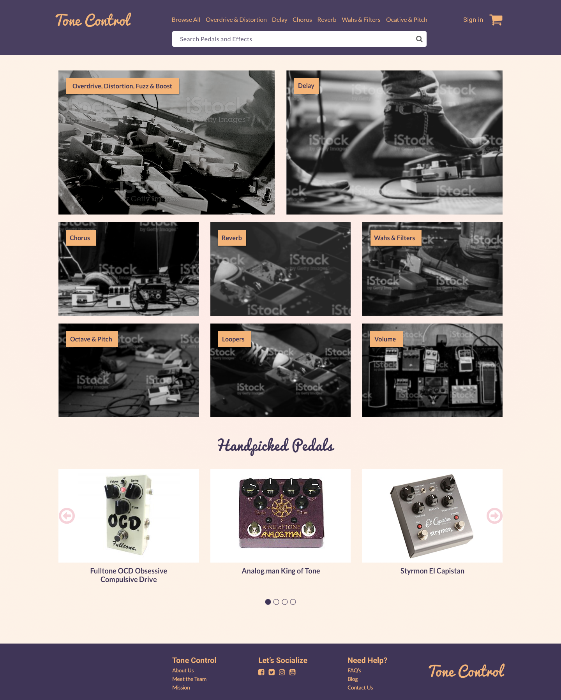

RG
Tone Control
A site design for an online music equipment retailer specializing in guitar pedals.
How do you sound?
The Problem
I've been a guitarist for over 20 years. Getting the right guitar sound for your stylistic taste is essential for recording, performing and for just having fun! There are a lot of online music equipment sites out there, but none of them are guitar pedal specific. This is where the concept of Tone Control came about - a site dedicated to guitar pedals.
The Solution

The Process
Competitive Analysis
I researched a some of the bigger online music equipment retail sites including Sweetwater and Musicians Friend to help gather necessary data, for inspiration and to see what they do well and not so well.
User Stories
I created a list of user stories documenting how customers would engage with the site.
| Role | Task | Page | Action |
|---|---|---|---|
| A User | I want to learn to search for pedals | Landing | Main Nav Search bar |
| A User | I want to browse a category of pedals | Landing | Main Nav link and Category Action link |
| A User | I want scroll through the handpicked pedals | Landing | Handpicked section scroll |
| A User | I want to find out where I can purchase the wine | Purchase | Main Nav link, Action link, and Footer link |
| A User | I want to learn about a specific pedal | Detail Product | Browse page link and Handpicked link |
| A User | I want to add a product to my cart | Product Detail page | Add to Cart link |
| A User | I want to read product reviews | Product Detail page | Reviews link |
| A User | I want to write a product review | Product Detail page | Add Review link |
| A User | I want to review my cart | Cart page | Cart link main nav or link after adding to cart |
| A User | I want to checkout | checkout page | Action link from cart page |
User Flows
From the user stories, I created a user flow diagram to help visualize how the customers would navigate the site to learn about the pedals and ultimately purchase the pedals.
Wireframes
Wireframe Type 1 - Home Page
I came up with a few layouts that provide easy navigation through search and filters to customers can quickly browse or find pedals.

Wireframe Type 2 - Home Page
I decided to remove the hero and focus on using more imagery for pedal categories and quick browsing.

Wireframe - Browse Page

Mockups
Typography
I chose a Roboto - Lato font pairing.
Color Psychology
When choosing my color palette I looked at purple as a way to emit royalty and creativity, after all, guitarists want to know they're buying quality pedals for their creative guitar licks. I also added orange and a tan color for warmth.
The Home Page has a clean and simple design with navigation and search capabilities front and center so users can quickly find products or browse product categories. The page has large enticing imagery.
There is a carousel of Handpicked Pedals for users to browse.
The browse page offers a familiar look and feel with product images, descriptions, reviews and easy left-hand navigation filters.

The product details page gives the user multiple views of the product, extensive detailed information including a video, specs. and reviews. The product price and Add to Card action button are clearly placed at the top of the page with accepted payment options. The customer has the ability to click back to the browse page category they came from or click on another main pedal category from the main nav as well as search.

Here is a view of the product details page with the reviews tab open listing out the reviews, ratings, reviewer name, and date of review.

The customer can hover over the cart icon and see a list of everything in their cart.

The cart page displays a list of all the products in the customer's cart with a primary checkout button placed clearly under the subtotal. The user has the ability to change the quantity of the each product as well as the ability to remove the product from their cart or save it for later.
The checkout process has 3 steps that are clearly indicated managing the user's expectations. There’s a summary of each step on the right column.

The shipping step gives the user the option to log in if they already have an account with a secondary button or to checkout as a guest. If they choose to checkout as a guest we require only relevant information. We give the user the option to create an account and to use their shipping address for billing. The page also gives the user shipping method options with appropriate pricing and estimated delivery times.
The billing step defaults to using the user’s shipping address for billing with the option to uncheck it and add a separate address. The user also has the ability to edit their billing address if it doesn’t look correct. The user selects their payment method and fills out the appropriate information.

The place order step lists the products being purchased with the subtotal, shipping, estimated tax, and order total. There’s a large primary place order button below the list.

Conclusion
When designing Tone Control I learned that action buttons can have crisp clean edges instead of round ones and that landing pages can work without one big hero image. I learned how to design a filter for browsing products. I also learned how to design a checkout process incorporating an account signup and login.
This project designed using Sketch.